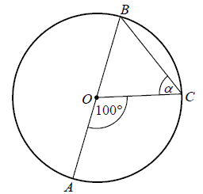

Matura 2013 sierpień
Wskaż rysunek, na którym przedstawiony jest zbiór rozwiązań nierówności \(2(3 − x) > x\). 
D
Gdy od \(17\%\) liczby \(21\) odejmiemy \(21\%\) liczby \(17\), to otrzymamy
A.\( 0 \)
B.\( \frac{4}{100} \)
C.\( 3{,}57 \)
D.\( 4 \)
A
Liczba \(\frac{5^3\cdot 25}{\sqrt{5}}\) jest równa
A.\( 5^5\sqrt{5} \)
B.\( 5^4\sqrt{5} \)
C.\( 5^3\sqrt{5} \)
D.\( 5^6\sqrt{5} \)
B
Rozwiązaniem układu równań \(\begin{cases} 3x-5y=0\\ 2x-y=14
\end{cases} \) jest para liczb \((x,y)\) takich, że
A.\(x\lt 0\)i\(y\lt 0\)
B.\(x\lt 0\)i\(y>0\)
C.\(x>0\)i\(y\lt 0\)
D.\(x>0\)i\(y>0\)
D
Funkcja \(f\) jest określona wzorem \(f(x)=\frac{2x}{x-1}\) dla \(x\ne 1\). Wartość funkcji \(f\) dla
argumentu \(x=2\) jest równa
A.\( 2 \)
B.\( -4 \)
C.\( 4 \)
D.\( -2 \)
C
Liczby rzeczywiste \(a, b, c\) spełniają warunki:
\(a+b=3, b+c=4\) i \(c+a=5\). Wtedy suma \(a+b+c\) jest równa
A.\( 20 \)
B.\( 6 \)
C.\( 4 \)
D.\( 1 \)
B
Prostą równoległą do prostej o równaniu \(y=\frac{2}{3}x-\frac{4}{3}\) jest prosta opisana równaniem
A.\( y=-\frac{2}{3}x+\frac{4}{3} \)
B.\( y=\frac{2}{3}x+\frac{4}{3} \)
C.\( y=\frac{3}{2}x-\frac{4}{3} \)
D.\( y=-\frac{3}{2}x-\frac{4}{3} \)
B
Dla każdych liczb rzeczywistych \(a, b\) wyrażenie \(a-b+ab-1\) jest równe
A.\( (a+1)(b-1) \)
B.\( (1-b)(1+a) \)
C.\( (a-1)(b+1) \)
D.\( (a+b)(1+a) \)
C
Wierzchołek paraboli o równaniu \(y=(x+1)^2+2c\) leży
na prostej o równaniu \(y=6\). Wtedy
A.\( c=-6 \)
B.\( c=-3 \)
C.\( c=3 \)
D.\( c=6 \)
C
Liczba \(\log_2{100}-\log_2{50}\) jest równa
A.\( \log_2{50} \)
B.\( 1 \)
C.\( 2 \)
D.\( \log_2{5000} \)
B
Wielomian \(W(x)=(3x^2-2)^2\) jest równy wielomianowi
A.\( 9x^4-12x^2+4 \)
B.\( 9x^4+12x^2+4 \)
C.\( 9x^4-4 \)
D.\( 9x^4+4 \)
A
Z prostokąta \(ABCD\) o obwodzie \(30\) wycięto trójkąt równoboczny \(AOD\) o
obwodzie \(15\) (tak jak na rysunku). Obwód zacieniowanej figury jest równy 
A.\( 25 \)
B.\( 30 \)
C.\( 35 \)
D.\( 40 \)
C
Liczby \(3x−4\), \(8\), \(2\) w podanej kolejności są
pierwszym, drugim i trzecim wyrazem ciągu geometrycznego. Wtedy
A.\( x=-6 \)
B.\( x=0 \)
C.\( x=6 \)
D.\( x=12 \)
D
Punkt \(S=(4,1)\) jest środkiem odcinka \(AB\), gdzie \(A=(a,0)\) i \(B=(a+3,\ 2)\). Zatem
A.\( a=0 \)
B.\( a=\frac{1}{2} \)
C.\( a=2 \)
D.\( a=\frac{5}{2} \)
D
Ile jest wszystkich liczb naturalnych trzycyfrowych podzielnych przez \(5\)?
A.\( 90 \)
B.\( 100 \)
C.\( 180 \)
D.\( 200 \)
C
Punkt \(O\) jest środkiem okręgu o średnicy \(AB\) (tak
jak na rysunku). Kąt \(\alpha \) ma miarę 
A.\( 40^\circ \)
B.\( 50^\circ \)
C.\( 60^\circ \)
D.\( 80^\circ \)
B
Najdłuższa przekątna sześciokąta foremnego ma długość \(8\). Wówczas pole koła
opisanego na tym sześciokącie jest równe
A.\( 4\pi \)
B.\( 8\pi \)
C.\( 16\pi \)
D.\( 64\pi \)
C
Pole równoległoboku o bokach długości \(4\) i \(12\) oraz kącie ostrym \(30^\circ\)
jest równe
A.\( 24 \)
B.\( 12\sqrt{3} \)
C.\( 12 \)
D.\( 6\sqrt{3} \)
A
Liczba wszystkich krawędzi graniastosłupa jest równa \(24\). Wtedy liczba
wszystkich jego wierzchołków jest równa
A.\( 6 \)
B.\( 8 \)
C.\( 12 \)
D.\( 16 \)
D
Objętość walca o wysokości \(8\) jest równa \(72\pi\). Promień podstawy tego walca
jest równy
A.\( 9 \)
B.\( 8 \)
C.\( 6 \)
D.\( 3 \)
D
Liczby \(7, a, 49\) w podanej kolejności tworzą ciąg arytmetyczny. Wtedy \(a\) jest
równe
A.\( 14 \)
B.\( 21 \)
C.\( 28 \)
D.\( 42 \)
C
Ciąg \((a_n)\) jest określony wzorem \(a_n=n^2-n\),
dla \(n \ge 1\). Który wyraz tego ciągu jest równy \(6\)?
A.drugi
B.trzeci
C.szósty
D.trzydziesty
B
Rzucamy dwa razy symetryczną sześcienną kostką do gry. Prawdopodobieństwo
dwukrotnego otrzymania pięciu oczek jest równe
A.\( \frac{1}{6} \)
B.\( \frac{1}{12} \)
C.\( \frac{1}{18} \)
D.\( \frac{1}{36} \)
D
Kąt \(\alpha \) jest ostry i \(\sin \alpha
=\frac{\sqrt{3}}{3}\). Wtedy wartość wyrażenia \(2cos^2\alpha
-1\) jest równa
A.\( 0 \)
B.\( \frac{1}{3} \)
C.\( \frac{5}{9} \)
D.\( 1 \)
B
Na rysunku przedstawiono wykres funkcji \(y=f(x)\).  Największa wartość funkcji \(f\) w
przedziale \([-1,1]\) jest równa
Największa wartość funkcji \(f\) w
przedziale \([-1,1]\) jest równa
Największa wartość funkcji \(f\) w
przedziale \([-1,1]\) jest równa A.\( 4 \)
B.\( 3 \)
C.\( 2 \)
D.\( 1 \)
B
Rozwiąż nierówność \(3x-x^2 \ge 0\).
\(x\in \langle 0;3 \rangle \)
Rozwiąż równanie \(x^3-6x^2-12x+72=0\).
\(x=6\) lub \(x=2\sqrt{3}\) lub \(x=-2\sqrt{3}\)
Kąt \(\alpha \) jest ostry i \(\operatorname{tg} \alpha
=2\). Oblicz \(\frac{\sin \alpha -\cos \alpha }{\sin \alpha +\cos
\alpha }\).
\(\frac{1}{3}\)
W tabeli zestawiono oceny z matematyki uczniów klasy \(3A\) na koniec semestru.
Średnia arytmetyczna tych ocen jest równa \(3{,}6\). Oblicz liczbę \(x\) ocen bardzo
dobrych \((5)\) z matematyki wystawionych na koniec semestru w tej klasie.
| Ocena | 1 | 2 | 3 | 4 | 5 | 6 |
| Liczba ocen | 0 | 4 | 9 | 13 | \(x\) | 1 |
\(x=3\)
Uzasadnij, że jeżeli \(a\) jest liczbą rzeczywistą różną od zera i \(a+\frac{1}{a}=3\), to \(a^2+\frac{1}{a^2}=7\)
Długość krawędzi sześcianu jest o \(2\) krótsza od długości jego przekątnej. Oblicz
długość przekątnej tego sześcianu.
\(3+\sqrt{3}\)
Dane są dwie prostokątne działki. Działka pierwsza ma powierzchnię równą \(6000\)
m2. Działka druga ma wymiary większe od wymiarów pierwszej działki o \(10\) m i \(15\) m
oraz powierzchnię większą o \(2250\) m2. Oblicz wymiary
pierwszej działki.
\(40\times 150\) lub \(100\times 60\)
Punkty \(A=(-1,-5), B=(3,-1)\) i \(C=(2,4)\) są kolejnymi wierzchołkami
równoległoboku \(ABCD\). Oblicz pole tego równoległoboku.
\(P=24\)
Objętość ostrosłupa prawidłowego trójkątnego \(ABCS\) (tak
jak na rysunku) jest równa \(72\), a promień okręgu wpisanego w podstawę \(ABC\) tego ostrosłupa jest równy \(2\). Oblicz tangens kąta między
wysokością tego ostrosłupa i jego ścianą boczną. 
\(\operatorname{tg} \alpha =\frac{\sqrt{3}}{9}\)